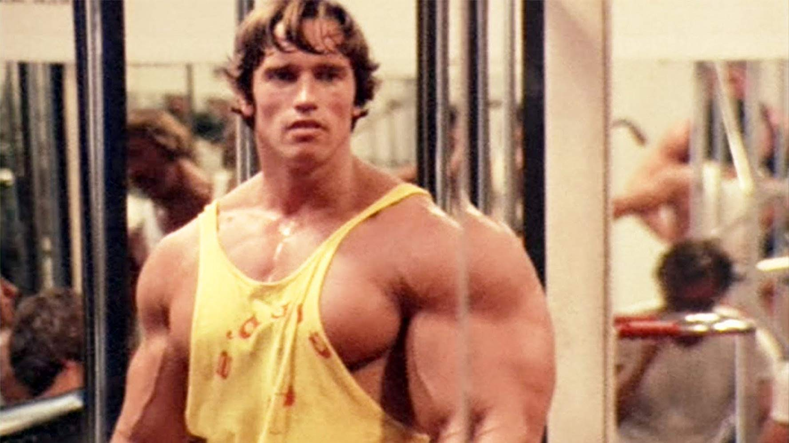
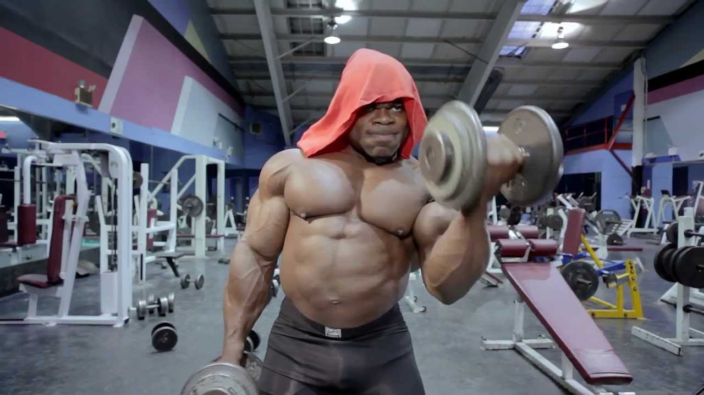
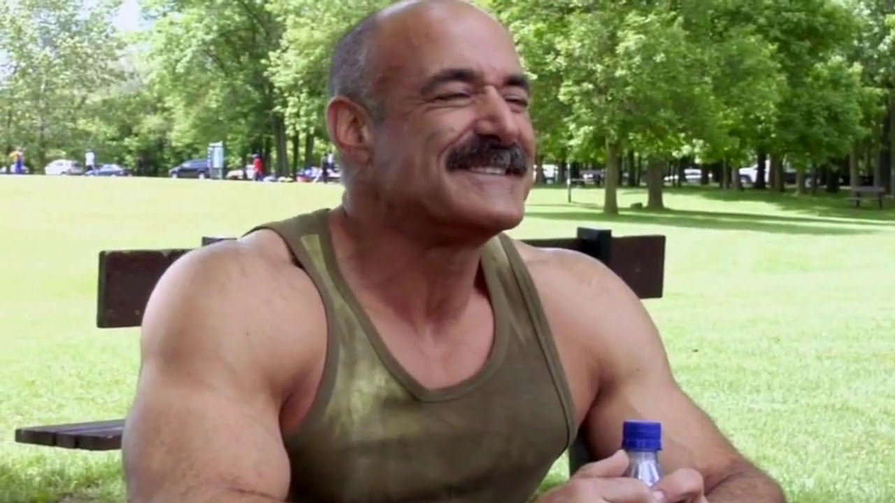

Got into programming as a protein shake and now im considered by many as a fullstack protein bar.
|  |
Pumping Iron (1977)Pumping Iron is a 1977 docudrama about the world of professional bodybuilding, with a focus on the 1975 IFBB Mr. Universe and 1975 Mr. Olympia competitions. |
|  |
Generation Iron (2013)Generation Iron is a 2013 documentary film which follows the world's leading professional bodybuilders as they train and compete for the 2012 Mr. Olympia. |
|  |
The Bodybuilder and I (2007)The Bodybuilder and I is a 2007 feature-length documentary film written and directed by Bryan Friedman, taking viewers on a journey into the subculture of geriatric bodybuilding as the filmmaker tries to reconnect with his father. |